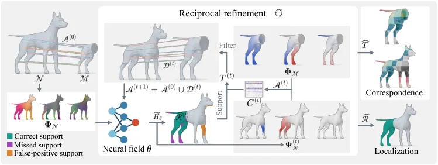
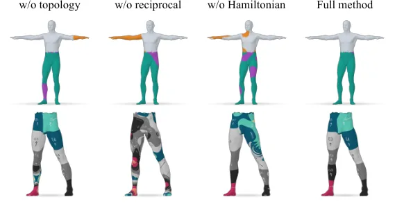
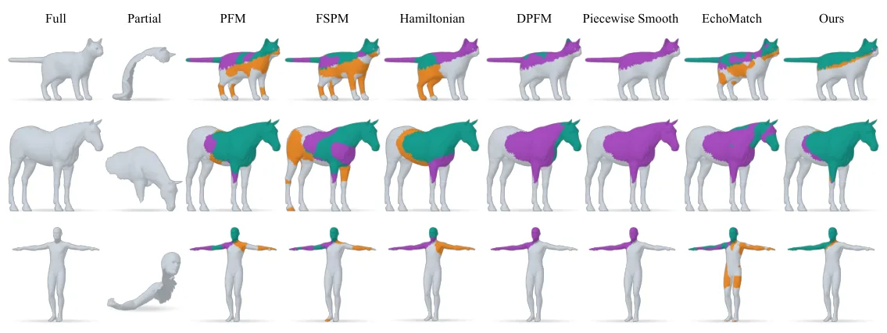
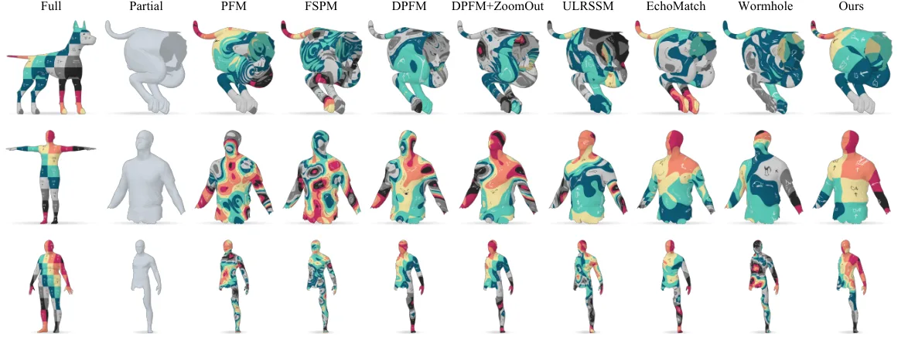
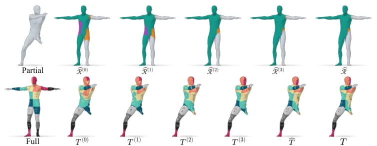

NHO：用于锚点区域定位与稠密对应的神经哈密顿算子
NHO: A Neural Hamiltonian Operator for Anchor-based Region Localization and Dense Correspondence
用稀疏锚点 + 部分形状内蕴几何学一个局部化哈密顿算子，配合算子-对应互惠精化；CUTS'24 定位 IoU 75.15、F1 85.13，跨尺度/旋转波动仅 0.18/0.35 个百分点，稠密对应误差 6.53（×100）。
IoU
F1
geo err
stability
作者、单位与技术谱系 · Research context
作者与单位
研究脉络
- 哈密顿谱定位（Choukroun 2018；Rampini 2019；Bensaïd 2022/2023）上游理论关系：NHO 建立在哈密顿算子谱定位与哈密顿—Dirichlet 连接之上，并把这些理论从对应-free 推广到锚点引导。[论文第 2、3 节]
- NAM / ZoomOut 精化上游精化关系：稠密对应精化采用 NAM 的 Neural ZoomOut 思路，ZoomOut 提供经典的谱分辨率递升。[论文第 2、5 节]
- 本篇推进：内蕴神经哈密顿场 + 互惠精化本篇推进关系：把哈密顿势参数化为内蕴神经场，并引入算子-对应互惠精化以利用两者的耦合。[论文贡献列表]
合作网络
- Jilin University ↔ Zhejiang University 共同署名Jilin University → Zhejiang University关系：共同署名（跨单位，含通讯作者）[arXiv 首页署名]
- 对 DPFM / EchoMatch / NAM 的对照与精化依赖NHO → DPFM / EchoMatch / NAM关系：明确技术依赖[论文第 5 节]
作者与单位取自论文首页署名；脉络依据论文引用与自述，属有来源的解读；未发现公开代码声明，故不登记代码节点。
方法本质拆解 · What actually changed
是不是微调？
不是预训练大模型微调，而是对每个形状对单独优化一个小型内蕴神经场——它把哈密顿势参数化为 LBO 特征上的逐顶点共享网络 g_θ。优化目标由锚点损失与谱/几何（拓扑）约束组成，属每个样本的测试时优化；对应精化则交给外部 NAM 的 Neural ZoomOut。
有没有额外约束？
额外先验有三类：稀疏锚点要求高区域分值，谱约束把哈密顿低频谱对齐到部分形状的 Dirichlet 谱（依据哈密顿—Dirichlet 连接），面积先验把部分形状的面积作为对应区域大小的软约束；拓扑损失用于规范支撑的空间连通性。势被 tanh 限制在 (0,τ)，使软指示趋近二值时逼近阶跃势。
推理/后端到底做了什么？
给定形状对与锚点，先估计算子参数，再交替做“由特征空间给谱坐标并限制匹配支撑”与“用几何可靠的对应更新势与锚点”的互惠精化；精化后聚合特征函数能量输出区域定位，并用当轮恢复的映射初始化 NAM 的稠密对应精化。它以锚点与内蕴几何共同引导，而非依赖任何跨形状的特征学习模型。
方法本质是什么？
本质是把区域定位问题改写成“学习一个局部化算子”：算子的低能特征函数自然集中在待求区域，于是同一次求解同时给出区域支撑与可对齐的内蕴坐标，稠密对应只需在该支撑内做全局搜索。它改变的是搜索空间的不确定性：错误的区域被势垒排除，而互惠精化让定位与对应彼此纠错。它没有做的是形式化保证谱对齐的全局最优性。
输入部分/完整网格与稀疏锚点，改变的位置是完整形状上的哈密顿势（内蕴神经场），合并动作为谱对齐 + 互惠精化 + NAM 精化，直接效果是同时得到区域定位与可用的稠密对应初值。

动机与问题Motivation
动机与问题
非刚性 partial-to-full 对应中只有未知子集存在有效对应，其余几何构成结构化干扰；少量可靠锚点只给出几个位置的约束，而区域范围与其余点的对应仍未知，二者互相耦合：定位区域能排除干扰、更多对应又为定位提供证据。作者指出前人要么偏对应、要么偏定位，如何把稀疏证据抬升为同时支持两者的局部谱表示仍未充分探索。
方法Method
方法总览
在完整形状上学习哈密顿算子 H=Δ+v，把势函数 v 参数化为内蕴神经场（用 LBO 特征 Φ_N^r 做位置编码，逐顶点共享网络输出 w_θ，经 tanh 变成软区域指示 s_θ，势有界于 (0,τ)）。优化用锚点损失加谱与几何约束；随后在算子估计与对应恢复之间交替精化：当前特征空间给出谱坐标并把匹配限制在候选支撑内，几何可靠的对应又反过来更新势与锚点。最终聚合特征函数能量给出区域定位，恢复的映射初始化稠密对应精化。
关键技术细节
理论依据是哈密顿—Dirichlet 连接：高势垒下低能特征函数集中在区域内，其低本征值逼近子域的 Dirichlet 本征值，因此可以把完整形状上的哈密顿谱对齐到部分形状的 Dirichlet 谱。默认用最远点采样选 m=25 个锚点；在归一化、未旋转 CUTS'24 上，把稀疏锚点换成可靠 DPFM 匹配作锚点可把对应误差从 6.53 降到 3.29（×100）。互惠精化让精度从 78.55 升到 80.31、IoU 从 74.37 升到 75.15，对应误差从 9.23 降到 8.37（精化前）。

实验Experiments
实验设置
评测在泄漏削减的 CUTS'24（SHREC'16 CUTS）、PFAUST-M、PFAUST-H、PFARM 上，覆盖 default/normalized × unrotated/rotated四种输入设置（旋转结果取三次平均）。定位指标为面积加权 IoU/precision/recall/F1 与 IoU 成功率曲线；对应用平均测地误差（×100）与 PCK 曲线。对照 PFM、FSPM、DPFM（含 ZoomOut）、ULRSSM、EchoMatch、Wormhole，以及对应-free 的 Rampini 哈密顿谱对齐与Bensaïd 分段平滑定位；精化采用外部 NAM。
实验数字与比较
CUTS'24 定位：NHO IoU 75.06–75.24、F1 85.02–85.37，在四种设置下几乎不变（波动 0.18 / 0.35 个百分点）；特征学习方法 DPFM 在 default 未旋转只有 17.03 IoU，但归一化后跳到 80.45，说明其对尺度敏感，而 NHO 跨设置稳定。稠密对应：旋转归一化 CUTS'24 让 DPFM+ZoomOut 从 2.17 恶化到 24.22，而 NHO 仅从 6.53 变为 6.58。NHO 在 CUTS'24、PFAUST-M、PFARM 取得最低平均误差，PFAUST-H 第二。
消融/失败边界
消融（归一化未旋转 CUTS'24）：去掉学习算子换成全局 LBO，IoU 75.15→55.48、F1 85.13→70.94、对应误差 6.53→9.84，是最大退化；去掉互惠精化 IoU→74.37、对应误差 9.23→8.37（精化前）；去掉拓扑损失只轻微影响聚合指标（74.45 IoU），但定性上产生零散断连区域，说明它主要规范支撑的空间结构。失败边界：方法假设 partial 与 full 近似等距且同尺度，谱对齐本身非凸、对初始化敏感，因此依赖锚点提供空间证据。
局限与迁移Limitations & Transfer
局限与待核验
作者未单独报告计算代价与对非等距、拓扑噪声的鲁棒性；论文用生成式 AI 辅助撰写并声明作者负责全部内容。待核验：默认 m=25 锚点由最远点采样取得，实际中锚点来源与可靠性如何影响结论；方法在真实扫描/噪声网格上的表现只在附录给出离散化鲁棒性分析，主文未量化。
与你研究路线的关系
可迁移思想是“用少量可靠观测（锚点）去学一个局部化的谱/基表示，并让表示与匹配结果互相精化”，这和我们用稀疏先验约束几何优化、并让优化结果反过来更新先验的闭环同构。跨尺度/旋转的稳定性论证（面积比不变 + 本征值同比缩放）也提示：如果先把表示做成内蕴量，就能减少对外部尺度/朝向归一化的依赖。







